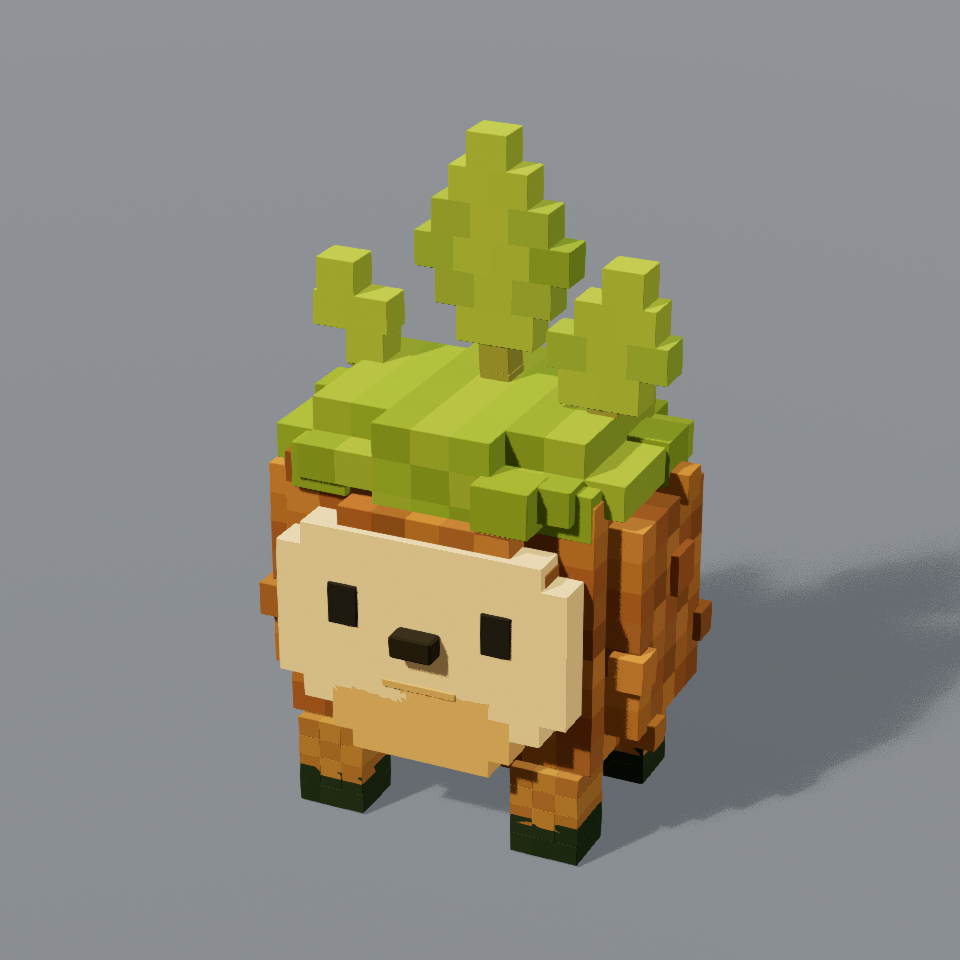
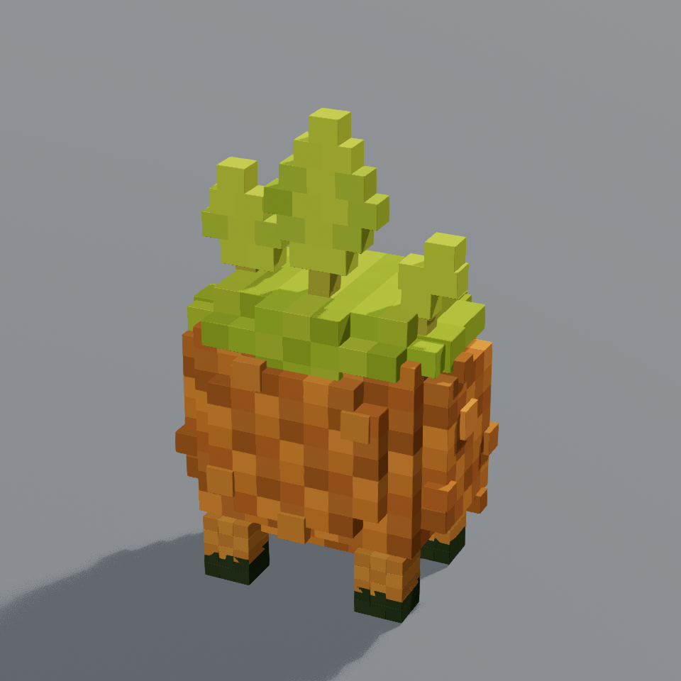

creatures items
brambit.png



creature form reference static geometry
/Game/Terrarium/Reconstruction/Meshes/SM_Recon_Brambit_R3
Selected build receipt · 24140 triangles · 0 saved normal errors
Review status from receipt: reviewed reconstruction not exact parity
Source role and conversion limits
- Static geometry only: no skeletal rig, skinning, animation clips or runtime controller is claimed.
- Package or render existence does not establish fidelity acceptance. Inspect the current source/render comparison and the selected build receipt.